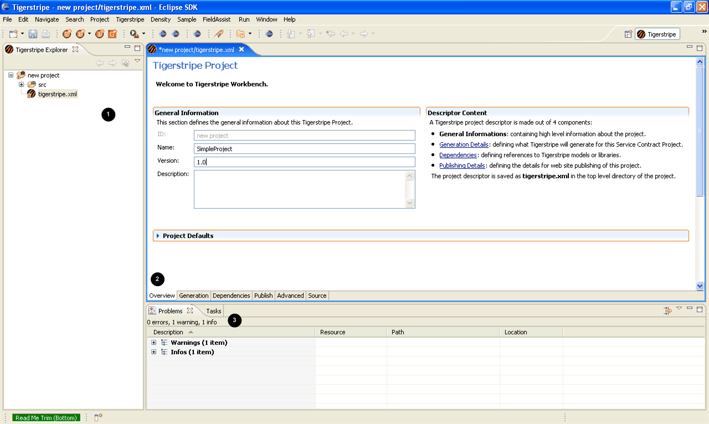

Your newly created project should be empty and the descriptor for the project automatically opens. The Tigerstripe perspective displays.

The following items are visible from the Tigerstripe perspective:The Tigerstripe Explorer. Displays the Tigerstripe Project in the workspace.
A multi-tab form. Contains details of your newly created project.
A properties view.
After you create a new project, you need to add project descriptors.
Note: You can also save your project by using the Save button in the toolbar, or by pressing CTRL+S.
Tigerstripe Workbench does not enforce any sort of structure on the project descriptor fields however, standards generally have a recommended format for the version field (OSS/J recommends something like v1-0).
Creating a New Project
Creating a Service End-point Model
Adding a Method to your Facade Model
Creating a Service Definition
Reviewing the Generated Code
Enhancing your Model
 You are now ready to create a service end-point model.
You are now ready to create a service end-point model.

© copyright 2005, 2006, 2007 Cisco Systems, Inc. - All rights reserved